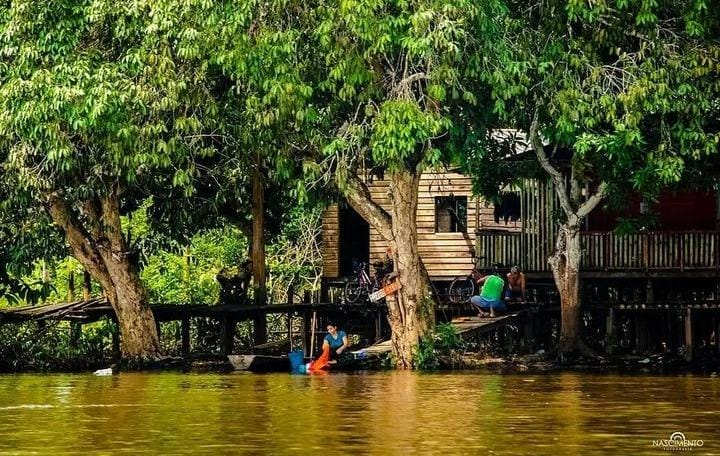
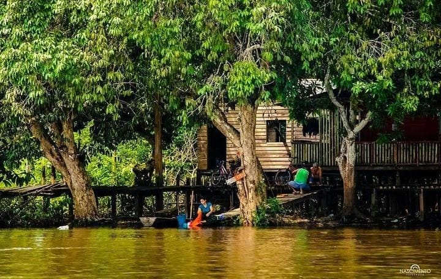

Fotos dos Lugares Mais Visitados
CACHOEIRA DE SANTO ANTÔNIO: O rio Jari possui diversas cachoeiras, mas a principal é a de Santo Antônio, considerada uma das mais belas do Brasil, muito visitada aos finais de semana. Cercada pela floresta Amazônica, possui várias quedas d’água que atingem 30m de altura. Para chegar até a cachoeira, é necessário contratar um barqueiro no porto da cidade. O percurso até lá demora cerca de 40min. Os barcos, conhecidos por catraias, passam o dia no local e o visitante pode ficar à vontade para contemplar as quedas e banhar-se nas águas do rio Jari.
PRAÇA JOÃO DA SILVA NERY: bastante visitado pelos turistas, localizada no bairro Agreste seu ambiente é totalmente revitalização e modernização, completo por jardins, floriculturas e etc.
IGREJA EVANGÉLICA ASSEMBLEIA DE DEUS TEMPLO CENTAL: é a igreja mais visitado do vale do jari, onde se congrega inúmeros fiéis, localizada no bairro Agreste.
O RIO JARI: é um curso de água que banha os estados do Pará e do Amapá, no Brasil. Desagua no rio Amazonas. Foi um rio importante na colonização da Calha Norte do rio Amazonas, servindo de via de transporte da castanha-do-pará e de outros produtos extraídos das florestas da região.
 
